Linachtalsperre
Infos
Am 5. August ist es wieder soweit: Nach langer Pause findet an der Linachtalsperre unter dem Titel Reservoir erneut ein Festival für Klang- und Medienkunst statt. Wie schon 2019 bietet das Festival eine einzigartige Mischung aus Beiträgen international anerkannter und regionaler Künstler:innen.
Die künstlerischen Beiträge zu Reservoir 2023 stellen in vielfältiger Weise eine Verbindung mit der unvergleichlichen Architektur der Linachtalsperre und ihrer Akustik her. Die Kombination aus Natur und Betonbauwerk bietet der Klang- und Medienkunst ein einmaliges Experimentierfeld und den Besuchern eine spektakuläre Kulisse für eine Reise in Bild- und Klangwelten, die man nicht alle Tage zu sehen und hören bekommt.
Das frei zugängliche, familienfreundliche Nachmittagsprogramm beginnt um 15 Uhr mit einer Vielfalt von Klanginstallationen und musikalischen Beiträgen, die sich über die 13 Bögen der Linachtalsperre verteilen – darunter Beiträge, die die Besucher:innen dazu einladen, mitzumachen und selbst die Akustik des Bauwerks zu erkunden.
Höhepunkt des Abendprogramms ab 21 Uhr sind eine audiovisuelle Performance von Felix Kubin und Josephin Böttger sowie weitere Beiträge, die die Bögen der Linachtalsperre buchstäblich in ein neues Licht setzen.
Programm
Nachmittag (15:00 bis 20:00 Uhr)
- Alphörner Augmented, Musikalische Performance der Alphornbläsern Schönwald von Peter Böhm
- Aquaedukt, Klanginstallation von Grauton
- Music for Rackets, partizipative Klanginstallation von Sascha Brosamer
- Spirophon 222, Klanginstallation von Roland Sproll
- Based on In C, interaktive Klanginstallation von Roland Sproll und Joachim Goßmann mit der Musik von Terry Riley
- Das kleine Lernen, generative Klanginstallation von Luc Döbereiner
- Cacophonia, partizipative Klanginstallation von Norbert Schnell
- Flo & Joe, Handpan Duo mit Florian Röhrl und Jochen Dreier
- Zirbinsky, elektronische Musik
Abend (21:00 Uhr, Einlass ab 20:00 Uhr)
- Deviation II, audiovisuelle Performance von Josephin Böttger und Felix Kubin
- Performing Aquaedukt, Performance von Grauton
- Bleep Blop, audiovisuelle Performance von Timo Dufner
- Music for electric guitar and mobile devices, partizipative Performance von Sascha Brosamer
- Re-Barraging Bar Rage at the Barrage, Kurzfilm mit Live-Vertonung von Ypsmael
Essen & Trinken (15:00 bis 24:00 Uhr)
Künstler:innen
Felix Kubin
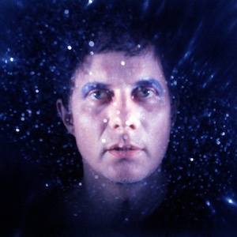Felix Kubin ist Komponist, Hörspielmacher, Kurator und Medienkünstler. In der Aufbruchstimmung der Home-Recording-Ära begann er mit 12 Jahren, seine ersten Tonexperimente auf einem 4-Spur-Gerät aufzunehmen. Danach breitete sich sein Universum kontinuierlich aus und umfasst heute futuristischen Pop, preisgekrönte Hörspiele, elektroakustische Musik, Lecture Performances und Orchesterkompositionen. Er betreibt das Plattenlabel Gagarin Records und ist Mitgründer des interdisziplinären Festivals Papiripar für Pop | Kunst | Rotation. 2010 widmete ihm die englische Musikzeitschrift WIRE eine Titelgeschichte. Seit 1993 veröffentlichte er viele Alben und spielte weltweit Konzerte, darunter an renommierten Orten wie MoMA PS1, Sonar, Transmediale und CTM, Unsound, Wien Modern, Märzmusik, MIT Theatre Arts, Présences électroniques und Ars Electronica. Er bewegt sich zwischen Hoch- und Untergrundkultur, Clubs und Konzerthallen, denn sein Hauptinteresse gilt der Verschiebung von Kontexten und Erwartungen. Neben diversen Auftragskompositionen für NDR das neue werk, das Internationale Musikfest Hamburg, Maerzmusik und Festival Borealis entwickelte Felix Kubin neue Radioformate für den NDR (Toxic Tunes), den Kunstradiosender Savvy Funk der dOCUMENTA 14 (Me & My Rhythm Box) und sein eigenes Festival Papiripar (Forum für Entladung).
http://www.felixkubin.com/Josephin Böttger
Die in Hamburg lebende Videokünstlerin Josephin Böttger produzierte zunächst experimentelle Kurzfilme. Seit ihrem Diplom an der HfBK Hamburg 2002 konzipiert sie ihre Arbeiten meistens für 2-6 Kanal Videoinstallationen, gezeigt auf internationalen Ausstellungen und Projektionen im öffentlichen Raum. In ihren Mehrkanal-Arbeiten arrangiert die Künstlerin Zeichnung und Realbild, dokumentarische Aufnahmen und gefilmte Performances. Sie bedient sich eines eigenen visuellen Repertoires, in dessen Zentrum meistens die Motive Architektur und Zeit stehen. Ihre Arbeiten behandeln die Metamorphose des städtischen Raums und thematisieren die Chronologie und Ästhetik des ständigen Neu- und Umbaus, vor deren Hintergrund sie eine Kaleidoskopierung verschiedener Seinszustände vornimmt. Der öffentliche Raum gehört zu ihren favorisierten Aktionsfeldern, die spezifischen Charakteristiken der urbanen Umgebung werden Bestandteil der mobilen Projektionen und Video Performances.
https://josephinboettger.com/Karen Geyer (aka Grauton)

Karen Geyer ist in Konstanz geboren und lebt und arbeitet als Klangkünstlerin in Zürich. Unter dem Namen Grauton erfindet sie selbst gebaute, mechanische Objekte, deren Klänge sie mit Kontaktmikrophonen abnimmt, verstärkt und von einem Mischpult aus dirigiert wie die Instrumente eines Orchesters. Die Instrumente bestehen hier aus zweckentfremdeten Alltagsgegenständen wie Fahrräder, Ventilatoren, Wasserkocher, Hocker oder Elektromotoren, die Geyer durch Präparationen mit einfachen Materialien wie Holz, Draht, Gummi, Silch, Kreppband manipuliert. Die Objekte werden so präpariert, dass sie sich selbst spielen und durch den Einbau von Zufallsmomenten ihren Klang ständig varieren. Eine Klanginstallation kann sich so tage- und monatelang selber spielen, ihre Klänge selbständig variieren und bekommt somit ein Eigenleben. In ihren Soundperformances ist Karen Geyer zwar selbst die Initiantin Ihrer Klanginstallationen, nimmt aber als Musikerin eine eher zurückgezogene, Rolle ein und lässt ihre Maschienenorchester weitgehend von alleine spielen. Sie wählt Spuren auf dem Mischpult, filtert oder verstärkt gewisse Klänge und erschafft so Kompositionen aus Geräuschen, polymetrischen Strukturen und mechanischen Sounds.
https://dumpf.com/artists/grauton/Sascha Brosamer

Sascha Brosamer ist ein Interdisziplinärer Künstler und Komponist elektronischer Musik. Er arbeitet mit E-Gitarren, Reisegrammophonen, Plattenspielern, handgefertigten Schallplatten und mobilen Geräten und erforscht dabei die Archäologie und kolonialen Bindungen des Klangs und seiner Projektion in die digitale Zukunft. Als Guitarist erweitert er mit seiner Herangehensweise die Grenzen der elektrischen Gitarrenperformance. Sascha Brosamer ist im Kinzigtal im Schwarzwald aufgewachsen und lebt und arbeitet in Berlin.
https://www.saschabrosamer.com/Die Alphornbläser Schönwald
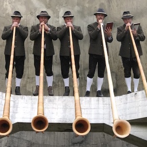Die Alphornbläser aus Schönwald im Schwarzwald haben ihren Ursprung vor über 35 Jahren in einem Alphorn-Trio, auch wenn der Verein Alphornbläser Schönwald e.V. erst am 24. November 2011 im Vereins und Probeheim Pfälzer Eck gegründet wurde. Aktuell setzt sich der Verein aus 10 aktiven und 65 passiven Mitgliedern zusammen. Die Alphornbläser Schönwald haben jedes Jahr um die 50 öffentliche Auftritte bei Feierlichkeiten in ganz Baden-Württemberg, aber auch im Allgäu oder im benachbarten Ausland bis zum Grödnertal. Die Gruppe war bereits erfolgreich bei internationalen Wertungsspielen in der Schweiz, Österreich, Frankreich und Kanada vertreten.
https://www.alphorn-schoenwald.de/Peter Böhm
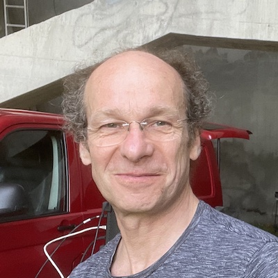Peter Böhm studierte Violine in Prag und Wien, Jazztheorie und Arrangement am Konservatorium Wien sowie Elektroakustik und Experimentalmusik bei Dieter Kaufmann an der Universität für Musik und darstellende Kunst Wien. In den 1980er- und 1990er-Jahren komponierte er elektroakustische Werke, Musik für Videos und Kunstfilme sowie Bühnenmusiken für das Theater der Jugend. 1987 gründete er ein Studio für experimentelle, audiovisuelle und elektroakustische Musikproduktionen und ein Verleihgewerbe für tontechnische Geräte. Er arbeitete als tontechnischer Leiter des Theater Gruppe 80, wo er 1988 sein erstes Sounddesign mit animierter Spatialisation (Klang-Raum-Bewegung) für Beat Furrers Musiktheater Die Reise entwickelte; seither arbeitete er u. a. auch mit Clemens Gadenstätter, Olga Neuwirth und Bernhard Lang zusammen.
Seit 1989 arbeitet Peter Böhm mit dem Klangforum Wien als Klangregisseur und Experte für Live-Elektronik, Beschallung und Tontechnik zusammen. Seine Komposition Stenimals wurde 1990 in der Wiener Secession uraufgeführt. Auch für Klangkörper wie Ensemble intercontemporain, Kronos Quartet, Ensemble Modern und ensemble recherche führte er unter Sylvain Cambreling, Beat Furrer, Emilio Pomàrico, Peter Rundel oder Hans Zender auf nahezu allen großen Festivals für zeitgenössische Musik und in zahlreichen Konzerthäusern Europas Klangregie. Neben seiner Arbeit als Sounddesigner, Komponist und Klangregisseur unterrichtete Peter Böhm von 1997 bis 2008 Klanggestaltung an der Universität für angewandte Kunst Wien und ist als Konsulent für Bauakustik tätig.
Timo Dufner
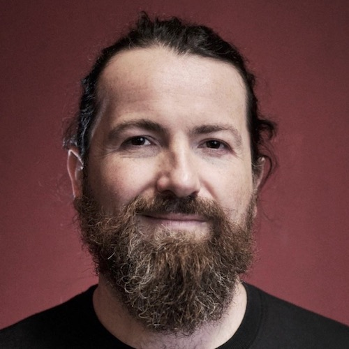Timo Dufner ist Musiker, Visueller- und Medienkünstler und Informatiker. Im Mittelpunkt seiner Arbeit steht das Ausloten der Grenzen von Hard- und Software. Dabei sind sogenannte Glitches eine unvermeidliche Komponente, die er bewusst in Kauf nimmt. Charakteristisch für seine Arbeit sind direkte Interaktionen zwischen Ton und Bild einerseits, Publikum und Kunstwerk andererseits. Timo Dufners Werke entstehen in Echtzeit — und damit ist jede Aufführung einmalig. Eingesetzt werden Video- und Audio-Verarbeitung in Echtzeit, Raumklang, maschinelles Lernen und KI, Live-Coding und zahlreiche elektronische Instrumente und Gerätschaften.
https://www.timodufner.com/Ypsmael
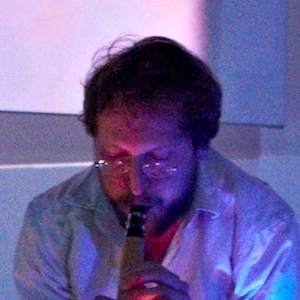Ypsmael wurde Ende der 2000er Jahre in England von dem im Schwarzwald aufgewachsenen Improvisator und autodidaktischen Klangautor NM gegründet. Als erster von mehreren Pseudonymen unter denen Norman Müller arbeitet, erschien Ypsmael seit 2010 mit Live-Elektronik und Elementen der Drone- und Noise-Musik wiederholt auf Bühnen in Großbritannien, Europa und Nordamerika. In seinen Klangcollagen und -schichtungen finden sich neben Instrumenten auch zufällige, instabile und gefundene Klänge, sowie Elemente des Absurden. Seit 2020 arbeiten Ypsmael, das Schwesterprojekt Smaely P, die Duos KrauSmaelyP (mit Stefan Krausen) und Ypsmael+Eloine (mit Bryan Day) mit britischen, US-amerikanischen und indonesischen Labels außerhalb der Musikindustrie zusammen, z. B. im Rahmen von Veröffentlichungen und Performances, und in verschiedenen Kontexten wie Produktion, experimentelles Sounddesign, Radiokunst und Klanginstallationen. Um diese Felder erweitert sich der aktuelle Fokus des Projekts, in welchem die für Ypsmael bisher charakteristische grobkörnige, computerlose klangliche Risikobereitschaft und elektroakustische Improvisation spürbar bleibt.
Pascal Dinser (aka Zirbinsky)
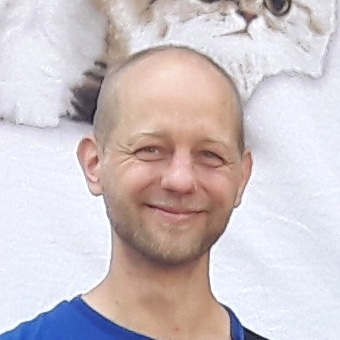Klangvagabund Zirbinski tingelt seit einigen Jahren durch Ambient- Lo-Fi-Pop Landschaften. Mit seinen Gefährten, der italienischen Tischorgel Galanti Clipper R6, dem Kinderkeyboard Bontempi KT32 und der namenlosen Kaufhausgitarre geht er nun auf Sound-Safari durch die Schwarzwälder Wildnis. Zusammen mit den Tieren des Waldes flattern und zwitschern, summen und brummen sie durchs Linachtal. Ein paar Plätze sind noch frei, also steigt mit zu einem Ausflug ins Innere des Schwungs in der Schwingung.
Roland Sproll
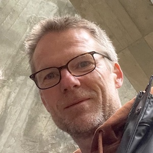Roland Sproll lebt in Freiburg und arbeitet seit vielen Jahren in unterschiedlichen Konstellationen im Grenzbereich digitaler Medien und digitaler Kunst. In seinen künstlerischen Projekten verfolgt er immer wieder den Ansatz, digitale Ausdrucksmöglichkeiten mit Analogem oder Mechanischem zu verbinden. Dies gilt bei seinen auditiven, wie auch visuellen Arbeiten für Theater, Performances, Installationen oder auch Apps. Zurzeit ist Roland Sproll Leiter des KI-Labors Latent Space der Hochschule für Musik Trossingen und der Hochschule Furtwangen.
Luc Döbereiner

Luc Döbereiner ist Komponist instrumentaler und elektronischer Musik. Er hat am Institut für Sonologie in Den Haag studiert und wurde von der Universität für Musik und darstellende Kunst Graz promoviert. Seine Arbeit beschäftigt sich mit Kompositionsmodellen, Algorithmik, Non-Standard Klangsynthese, Improvisation, Materialität, künstlicher Intelligenz und komplexen Systemen in der musikalischen Komposition und Klangkunst. Seine Musik wurde von zahlreichen Ensembles und Solisten in Europa aufgeführt und er hat seine wissenschaftliche Arbeit in Zeitschriften wie Computer Music Journal, Organised Sound und Contemporary Music Review veröffentlicht. Er hat an der Hochschule der Künste Bern, der Universität der Künste Berlin und an der FU Berlin unterrichtet und war Postdoc-Forscher am Centre for Research in New Music der University of Huddersfield und am Institut für Elektronische Musik und Akustik Graz.
https://doebereiner.org/Joachim Goßmann
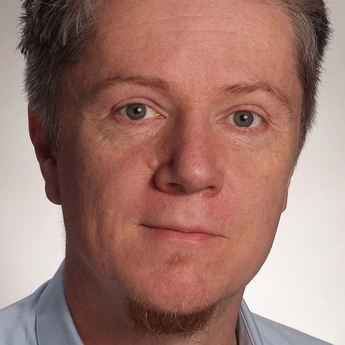Dr. Joachim Goßmann arbeitet an den Schnittstellen von Technik, Philosophie und kreativer Praxis an audiozentrischen Medienumgebungen. Er hat ein Tonmeisterdiplom der UdK, Berlin, ein MFA für Medienkomposition vom California Institute of the Arts sowie einen PhD im Fachbereich Computermusik von der University of California, San Diego. Seine berufliche Karriere führte ihn zum Fraunhofer IAIS in Bonn, dem ZKM Karlsruhe, dem Qualcomm Institute in San Diego sowie DTS, Inc. wo er sich als Entwickler, Programmierer und Erfinder mit Prototypen im Bereich der Virtual- und Augmented Reality, Klangverräumlichung im Bereich der Elektroakustischen Musik, Objektbasierten Audioformaten und dem Konflikt zwischen zeitbasierten Inhalten und Interaktion beschäftigte.
Beiträge
Deviation II
Audiovisuelle Performance von Felix Kubin und Josephin Böttger
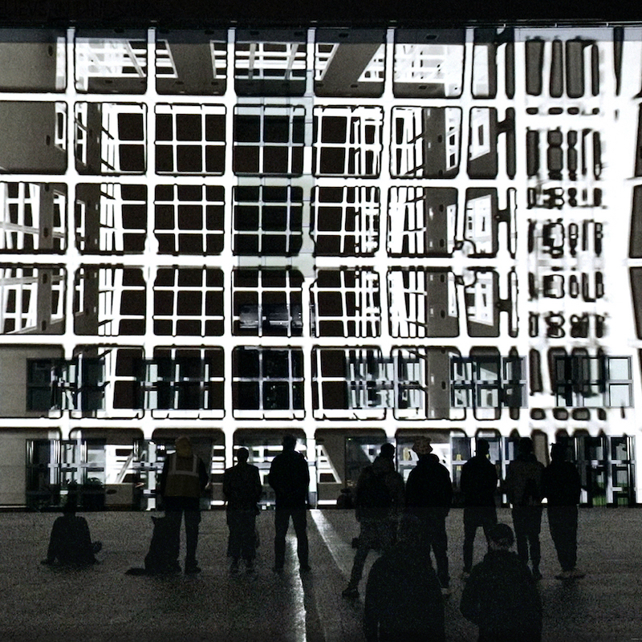In den vergangenen Jahren entwickelte sich eine enge Zusammenarbeit zwischen der Video-Künstlerin Josephin Böttger und dem Komponisten und Medienkünstler Felix Kubin. Das Duo erschafft audiovisuelle Environments und Performances in leerstehenden Industriegebäuden, multiphonische Konzerte und riesige Projektionen auf Außenfassaden (zuletzt auf die Galerie der Gegenwart in Hamburg). Eine besondere Rolle spielt dabei die räumliche, akustische und visuelle Erforschung der Architektur und ihrer Umgebung. Auch die Bespielung der Linachtalsperre geht auf die Eigenarten des Bauwerks ein. Kamerafahrten entlang der Architektur erscheinen als Leitmotive in den statischen und mobilen Videoprojektionen. Im mittleren Gebäudebogen werden sie Teil eines mehrkanaligen audiovisuellen Zusammenspiels, das den Raum vollständig illuminiert. Auch Klänge aus den benachbarten Gebäudebögen werden in die Performance integriert, als Töne und Tropfen. „Wie bei einem spielerischen Heisenberg-Experiment verändert unsere bloße Anwesenheit die Form und Wahrnehmung dessen, was um uns herum visuell und akustisch entsteht. Gelegentlich dienen wir auch unwissentlich als weitere Projektionsflächen innerhalb dieser monströsen geometrischen Architektur.“ (Matthew Partridge).
Aquaedukt
Klanginstallation und Performance von Grauton
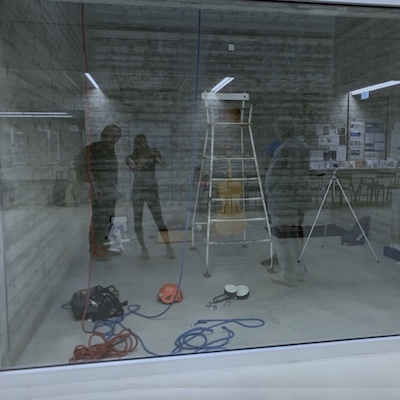Aquaedukt ist eine Klanginstallation in einer größeren Serie von Experimenten unter dem Titel Giant Instruments. Das Projekt ist der Versuch, mittels der Technik des Industriekletterns, Instrumente aus bestehenden monumentalen Objekten zu bauen, ohne Einschränkungen von Format und Dimension. Klassische Instrumente sind so gebaut, dass sie auf die Anatomie des Menschen ausgelegt sind. Durch ihre Spezialisierung auf Piezotechnik und die Ausbildung zur Insdustriekletterin (SHRV) hat Karen Geyer die Möglichkeit, faszinierende Orte in ihren Klangqualitäten und ihrer visuellen Faszination hör- und sichtbar zu machen. In ersten Projektstudien hat Karen Geyer die Klangtürme der Hochschule Luzern erkundet sowie verschiedene Orte in der Nähe des Bodensees. Für das Festival Reservoir ist es geplant, die Klangqualitaeten der Linachtalsperre zu erforschen. Ein Bogen der Staumauer soll mittels Seiltechnik so präpariert und mit Lautsprechern bestückt werden, dass daraus ein riesiges Instrument entsteht, das visuel und akustisch bespielt wird und sich auch selber spielen kann.
Bleep Blop
Audiovisuelle Performance von Timo Dufner
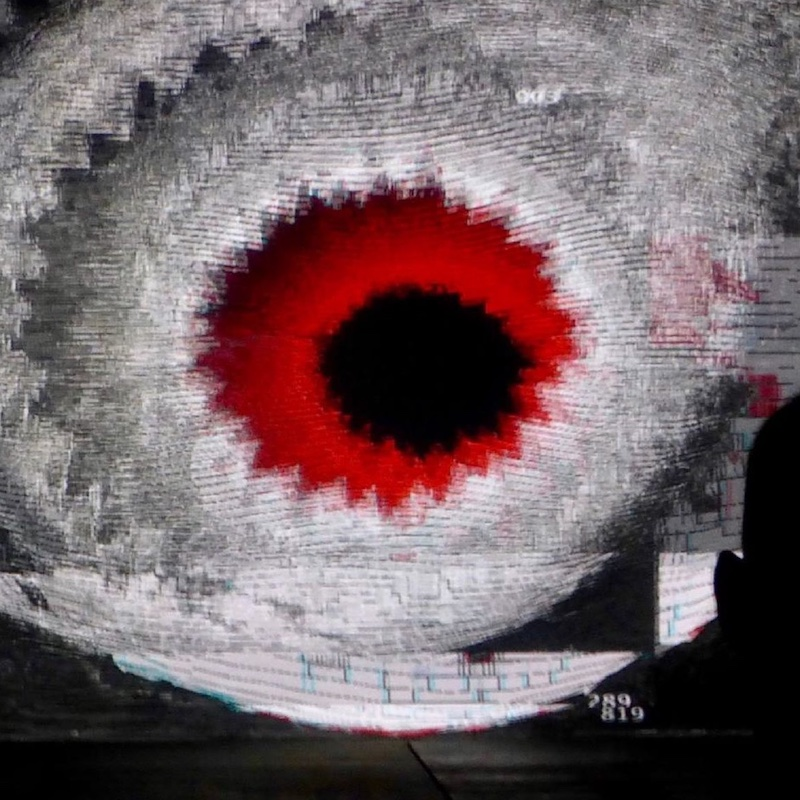"Bleep Blop" ist eine datenbasierte audiovisuelle Performance im Bereich experimenteller Rhythmik. Sie nutzt Erdbeben-Daten, die den verheerenden Tsunami in Thailand verursachten, um hypnotische und meditative Muster zu generieren. Gleichzeitig wird die Musik mithilfe der selben Datenquellen visualisiert. Während der Performance interagieren und verschmelzen Visualisierung und Musik miteinander und beinflussen sich gegenseitig für ein jeweils einzigartiges Ergebnis.
Music for electric guitar and mobile devices
Partizipative Performance von Sascha Brosamer
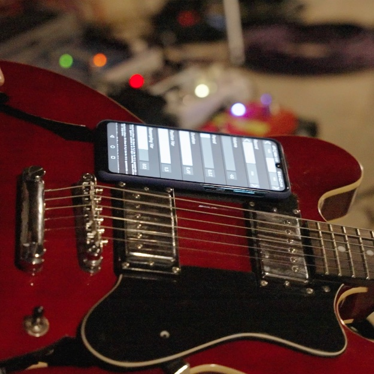Der Ansatz dieser Performance besteht darin, den gebräuchlichen Gitarrenverstärker hinter sich zu lassen und stattdessen die Smartphone-Lautsprecher des Publikums zu nutzen, um seine elektrische Gitarre zum Klingen zu bringen. Um die ZuschauerInnen aktiv in das Musikerlebnis einzubeziehen und eine interaktive Hörerfahrung zu schaffen, verwendet Sascha Brosamer die webbasierte Applikation Grainfield. Diese Anwendung wurde von Benjamin Matuszewski und Norbert Schnell im Rahmen des CoSiMa-Forschungsprojekts am IRCAM Centre Pompidou in Paris entwickelt. Mit Grainfield haben die ZuhörerInnen die Möglichkeit, ihre eigenen Smartphones zu nutzen, um sich mit Sascha Brosamers Gitarrenklängen zu verbinden und aktiv am Klanggeschehen teilzunehmen. Dies erzeugt einen spannenden und interaktiven Klangraum, in dem das Publikum nicht nur zuhört, sondern selbst zum Gestalter der Performance wird.
Re-Barraging Bar Rage at the Barrage
Kurzfilm mit Live-Vertonung von Ypsmael
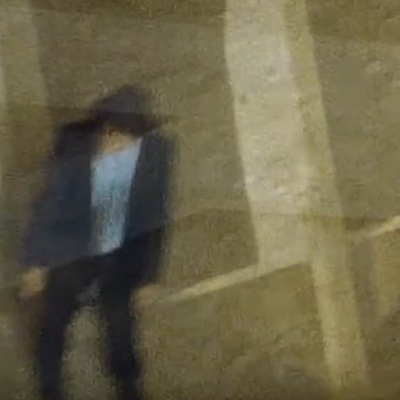In einer experimentellen Geräuschmusik Performance wird Ypsmael Schaltkreise und Rückkopplungsschleifen zum klingen, knarzen, fiepen, brummen und kreischen bringen — als improvisierter Live Soundtrack zu einer Neufassung von Barraging Bar Rage at the Barrage, eines Kurzfilms (Super-8), der u.a. an der Linachtalsperre entstanden ist.
Chronologie der Produktion — 2017: Skript und Dreh (Kamera: Dan Anderson), 2019: Produktion der Originalfassung (Post-Produktion: Florin Fleig), 2023: Neufassung für Reservoir 2023 (Bearbeitung: NM).
Mitwirkende — Darsteller: Smaely P, Drehbuch und Regie: NM, Musik: Ypsmael.
Alphörner Augmented
Musikalische Performance der Alphornbläsern Schönwald von Peter Böhm
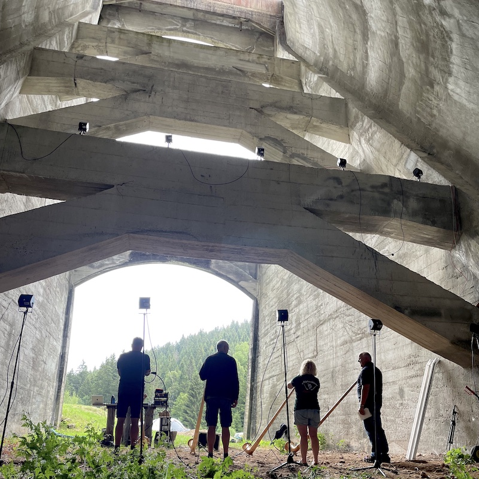Der Wiener Komponist und Klangregisseur Peter Böhm hat für Reservoir 2023 eine musikalische Performance ausgearbeitet, die den Klang der Alphornbläser aus dem nahegelegenen Schönwald elektroakustisch erweitert. Dazu werden die Alphornbläser so platziert, dass die eigene Akustik der Linachtalsperre auch ohne Verstärkung zu einem weit tragenden Klang der akustischen Instrumente beiträgt. Zusätzlich wird die Gruppe mit elektroakustischen Mitteln multipliziert, indem Überlagerungen und Verfremdungen über weitere Bögen der Talsperre verteilt werden. Das Publikum wird dazu aufgefordert, sich während der Aufführung zu bewegen und das Klanggeschehen aus verschiedenen Perspektiven zu verfolgen.
Zirbinsky
Elektronische Musik
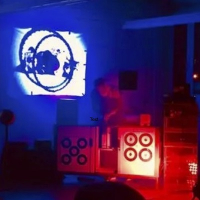Zu Beginn des neuen Jahrtausends nahm Reiseleiter Zirbinki eine handvoll Außenseiter unter seine Sound-Fittiche, die ihn bis heute auf abenteuerliche Expeditionen begleiten. Galanti Clipper R6, die temperamentvolle Italo-Tischorgel, wurde in einem Stuttgarter Elektro-Saloon anhänglich und rückte nicht mehr von seiner Seite. Auf dem Sternschanzen Flohmarkt sprang ihm kurz darauf das Kinder-Keyboard Bontempi KT32 in die Arme. Zirbinski pflanzte dem kleinen Schreihals einen 6,3mm Klinkenstecker ein, damit er die Melodien mitquäcken kann. Ein weiterer ramponierter Kumpel lief dem Reiseleiter in einer dunklen Münchener Gasse zu. Die namenlose Kaufhausgitarre kläfft seitdem mürrisch den Straßen-Blues Richtung ¾-Mond. Zusammen entführt diese Karawane der Klang-Käuze ihre Zuhörer in LoFi-Pop Galaxien, die sich bestimmt nicht gewaschen haben.
Spirophon 222
Klanginstallation von Roland Sproll
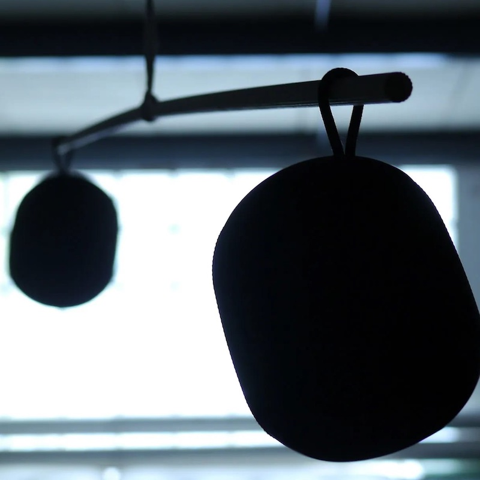Spirophon 222 ist ein kinetisches Klangmobile, bei dem die Lautsprecher auf geometrischen Bahnen kreisen und dabei ein periodisches, fortlaufendes Muster entwickeln. Klanglich experimentiert Roland Sproll mit flanierenden Sounds und rotierenden Loops, die sich durch ihre kleinen Rundreisen verändern und ständig neu formieren.
Music for Rackets
Partizipative Klanginstallation von Sascha Brosamer
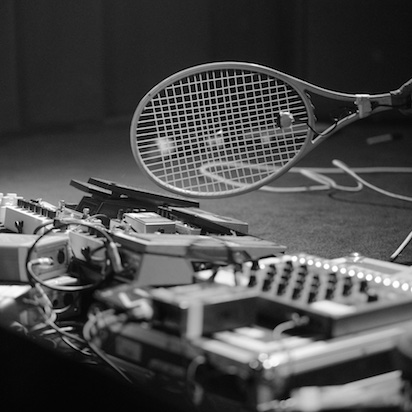Music for Rackets ist eine partizipative Klanginstallation, die die ganze Familie zu einer unterhaltsamen und interaktiven Erfahrung einlädt. Nehmen Sie teil und spielen Sie mit mikrofonierten Rackets (Schlägern), um rhythmische Muster zu gestalten, Klänge zu modulieren und ungewöhnliche Geräusche zu erzeugen. Gemeinsam werden verschiedene Spieltechniken und Bewegungsmuster erkundet, um die vielfältigen Klangmöglichkeiten zu erforschen.
Music for Rackets
Videomapping von Studierenden

Studierende der Fakultät Digitale Medien der Hochschule Furtwangen verwandeln einen Innenbogen der Linachtalsperre mittels Projection Mapping Technologie in eine dynamische, wandelbare Leinwand. Form und Gestalt der Architektur werden durch die großflächige, audiovisuelle Bespielung neu inszeniert.
Entwicklung: Ethan Fuchs, Herbert Gerasimov, Benjamin Kowalsky, Natalie Weber, Marit Zenker — Betreuung: Prof. Dr. Uwe Hahne, Prof. Regina Reusch
Spirit Garden
Immersive audiovisuelle Installation von Studierenden
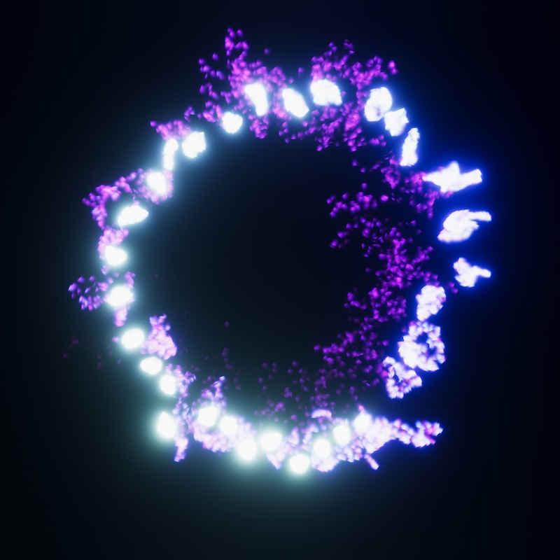Spirit Garden ist ein immersives audiovisuelles Erlebnis von Studierenden der Fakultät Digitale Medien der Hochschule Furtwangen. Die Arbeit lädt die Besucher zu einer außergewöhnlichen Reise mit einem visualisierten Spirit ein, der auf ihre Bewegungen reagiert. Taucht ein in eine immersive Welt und entdeckt, was eure Bewegungen erschaffen können.
Entwicklung: Amélie Dell'Oro, David Eichler, Jana Franke, Liz Hengsteler, Laura Ramos Hubel — Betreuung: Prof. Regina Reusch
Tickets
Tickets für das Abendprogramm sind für 15€ erhältlich.
Das Nachmittagsprogramm ist ohne Ticket frei zugänglich.
Das Festival wird von dem Verein Reservoir e.V. in Zusammenarbeit mit dem Kunstverein Global Forest e.V. und der Hochschule Furtwangen ausgetragen — mit einer Förderung des Musikfonds und der Beauftragten der Bundesregierung für Kunst und Medien.
Gefördert von: